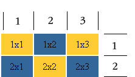
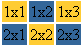
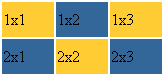
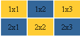

Учебник по Html для чайников. Таблицы.Ступенька 22-ая.Итак, как помнится, мы решили с вами создать вот такую таблицу:  А получилось у нас еще только вот такая таблица:  В чем же дело? А в том, что мы не задали высоту и ширину ячейкам таблицы нашей:) Вспомним об атрибутах height и width - вы можете их задать для всей таблицы, для одного ряда, для ячейки (столбца). Высота и ширина могут задаваться как в пикселях, так и процентах. В нашем случае мы зададим ширину и высоту в пикселях для столбцов (ячеек).
Предвижу вопрос: - А почему высота задана только для двух ячеек (столбцов), а ширина для всех? Все очень просто: Если в ряду вы задаете для какой-либо ячейки высоту большую, чем для других то, не смотря на это, все ячейки (столбцы) вашего ряда станут по высоте равны наибольшей:) вот так-то. Тоже самое с рядами, если вы зададите для какого-то ряда наибольшую длину, то все остальные ряды выровняются по этому наибольшему ряду (помните ряд - это не ячейка, поэтому я задала в нашем примере ширину для каждой ячейки (столбца)).
Вы можете задать высоту и ширину для всей таблицы, тогда все ячейки (столбцы) и ряды поделят данное им пространство поровну, если не задавать им это пространство персонально (в процентах от общей ширины (высоты) таблицы или пикселях). Кстати, атрибуты height и width можно задать в процентах: <td width="30%"> содержимое ячейки </td> Если мы задали для ячейки ширину в 30 процентов, как в нашем примере, то это значит, что на остальные ячейки у нас осталось еще 70 процентов, т.е. сумма их ширин не должна превышать 70 процентов. Почему? Простая арифметика: в сумме это все должно равняться 100%. Считаем: 100 – 30 = 70. :) Вернемся к нашему примеру: теперь мы почти получили то, что хотели:)  Теперь нам осталось лишь выровнять содержимое (текст) внутри таблицы:
И... готово!:)
 Поскольку содержимое каждой ячейки как бы обстановка отдельной комнаты, то и тэги для центрирования текста нам нужно было прописать в нашем примере для содержимого (текста) каждой ячейки, что мы с вами и сделали. Вы должны помнить и другие тэги для выравнивания содержимого, кроме <center>, а также атрибут align, который мы прописывали для них. Этот атрибут можно задать и для ячеек таблицы: <td align=”center”>2x2</td> Соответственно, атрибут align может принимать еще значения right и left. Значение justify при употреблении с тэгом <td> атрибут align принимать не может. В нашем случае атрибут align выравнивает содержимое внутри ячейки (на всякий случай, если вы еще не поняли его назначение). В каждой ячейке могут находиться и картинки, и текст (+тэги и атрибуты применяемые к ним), и даже таблицы (в этом случае они называются - вложенные таблицы). Т.е. тэги, которые мы применяем для форматирования содержимого (контента) - все те же. Давайте шагнем на следующую ступеньку и продолжим разговор о таблицах.
<<< Ступенька 21-ая: Назад | Далее: Ступенька 23-ая >>>
|
|||||||||||||